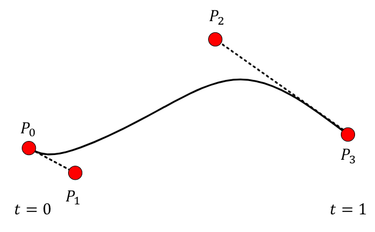

Reprezentacje obiektów
Modelowanie krzywych
- Linie łamane
- sekwencja wierzchołków połączona prostymi liniami
- przydatne, ale nie dla gładkich krzywych
- Gładkie krzywe
- splajny (ang. splines)
Splajny
- Typ gładkich krzywych w 2D/3D
- Wykorzystanie
- ilustracje 2D
- fonty
- modelowanie 3D
- animacja
- Konstrukcja
- interpolacja
- aproksymacja
- Użytkownik definiuje punkty kontrolne
- Punkty są interpolowane w celu utworzenia gładkiej krzywej
- krzywa jest całkowicie zdeterminowana przez punkty kontrolne
- Czemu splajny
- prosta definicja - kilka punktów, mało danych do przechowania
- krzywa parametryczna - wygodna do pracy np. przy animacji
- wielomiany niskiego stopnia połączone ze sobą
Definicja krzywych
- Sposób jawny
- \(y=f(x)\)
- generowanie punktów przez podstawienie konkretnych wartości
- nie może być dwóch punktów o tym samym x
- Sposób niejawny
- \(f(x,y)=0\)
- sprawdzenie czy punkt należy do krzywej
- mniej wygodne do wyznaczenia
- Sposób parametryczny
- \(x=f(t)\)
- \(y=g(t)\)
- podstawienie kolejnych wartości \(t\) generuje kolejne punkty krzywej
Interpolacja i aproksymacja
- Interpolacja
- krzywa przechodzi przez punkty kontrolne
- może być niestabilna
- krzywa interpolacyjna
- Aproksymacja
- punkty służą do określenia kształtu krzywej
- krzywa nie musi przechodzić przez punkty kluczowe
- wygodne w użyciu
- np. krzywa Beziera
Krzywe Beziera

\[P(t) = (1-t)^3P_1 + 3t(1-t^2)P_2 + 3t^2(1-t)P_3 + t^3P_4\] \[P(t) = [P_0, P_1, P_2, P_3] \cdot M \cdot \begin{bmatrix}t^3 \\ t^2 \\ t \\ 1\end{bmatrix}\] \[M = \begin{bmatrix} -1 & 2 & -3 & 1 \\ 3 & -6 & 3 & 0 \\ -3 & 3 & 0 & 0 \\ 1 & 0 & 0 & 0 \\ \end{bmatrix}\]
- Użytkownik definiuje 4 punkty kontrolne
- Krzywa przechodzi przez punkty definiujące początek i koniec
- Krzywa aproksymuje pozostałe dwa punkty kontrolne
- Krzywa wielomianowa
- Krzywa jest styczna w punktach
- \(P_0\) do \(P_0-P_1\)
- \(P_3\) do \(P_3-P_2\)
- Jest ograniczona przez otoczkę wypukłą jej punktów kontrolnych
- Gładkie połączenia łuków
- kiedy punkty kontrolne dwóch krzywych są współliniowe
- Łatwa do podziału
- podzielona krzywa nadal będzie kubiczna
- przydatne do dodawania detali
- algorytm de Casteljau
Algorytm de Casteljau

Geometryczna konstrukcja punktu krzywej Beziera odpowiadającego danej wartości parametru. Szukamy punktu określonego parametrem \(u\).
- Podziel odcinki łączące kolejne punkty kontrolne w proporcjach \(\frac{u}{1-u}\)
- Połącz wyznaczone punkty odcinkami
- Podziel nowo utworzone odcinki w proporcjach \(\frac{u}{1-u}\)
- Połącz wyznaczone punkty odcinkami
- Podziel nowy odcinek w proporcjach \(\frac{u}{1-u}\)
- Weź wyznaczony punkt
Reprezentacja 3D
Jaka jest dobra reprezentacja 3D
- Intuicyjna
- Gwarancja ciągłości
- bez dziur
- Gwarancja poprawności
- Wydajny rendering
- Wydajne operacje boolowskie
- Dokładne
- Zwięzłe
- Posiadające strukturę
Stosowane reprezentacje 3D
- Surowe dane
- zebrane z czujnika (np. kamery 3D)
- obrazy głębi
- chmury punktów
- woksele
- Powierzchnie
- siatki trójkątów
- powierzchnie parametryczne
- Bryły
- CSG
- Graf sceny
- typowe dla programów typu Blender, 3ds max
Chmura punktów
- Zbiór punktów bez struktury
- Dane pochodzą z
- skanery 3D
- fotogrametria
- algorytmy wizji komputerowej
- Jest dużo szumu
- wymaga dalszego przetworzenia żeby zrobić coś użytecznego
- wyrzucić outliery itp.
- Bardzo lekkie
- zapamiętane tylko pozycje punktów
- Wykorzystanie
- wizualizacje
- kontrola jakości - np. mierzenie odchyleń od powierzchni
- tworzenie modeli CAD
- Zalety
- reprezentacja obiektów za pomocą skończonej liczby punktów
- szybkie tworzenie modeli - za pomocą odpowiedniego sprzętu
- Wady
- brakuje precyzji modeli powierzchniowych
- konieczność rekonstrukcji powierzchni
- nie ma reprezentacji krzywych
Obrazy głębi / dystansu
- Punkty 3D przeniesione na płaszczyznę obrazu odległość od pewnego
punktu
- zwykle sensora zbierającego dane
- Dane z
- kamer time-of-flight
- triangulacja stereo
- skanery światła strukturalnego
- Kamery są konfigurowalne
- np. czas zbierania informacji
- krótki czas - mniej dokładne
- Problemy np. z przezroczystymi obiektami (szklanka)
Woksele
- Jednorodna siatka wolumetrycznych próbek
- woksel - najmniejszy element przestrzeni 3D
- odpowiednik piksela w 2D
- Zazwyczaj sześciany
- Zawiera informację na temat wnętrza obiektu
- np. gęstość chmury - jak będzie przepuszczać światło
- Dane z
- tomografu - w zastosowaniach medycznych
- w animacji - dane pochodzące z symulacji
- Zastosowania
- obrazowanie medyczne
- symulacja oświetlenia
- modelowanie obiektów (Z-Brush)
- Zalety
- bardzo dobre modelowanie przestrzeni 3D
- możliwość symulacji których nie ma w innych metodach (wolumetria)
- najprostsza metoda wizualizacji danych medycznych
- Wady
- kosztowny sprzęt albo bardzo duży nakład czasu
- brak precyzji w modelowaniu powierzchni
- kosztowny rendering
Siatki poligonów
- Zwykle zbudowane z trójkątów
- trójkąt reprezentowany przez 3 wierzchołki
- czasem czworokąty
- Tylko powierzchnie
- Reprezentacja np. przez paski trójkątów
- kolejny trójkąt dodaje tylko jeden wierzchołek do sekwencji
- Realistyczne cieniowanie
- interpolacja w poprzek wielokątów - redukcja krawędzi
- Wspierane przez sprzęt
- Zalety
- prostota reprezentacji
- bezpośrednio przetwarzanie wspierane przez sprzęt (GPU)
- powszechnie dostępny software do modelowania (np. Blender)
- Wady
- gładkie powierzchnie wymagają dużej liczby trójkątów
- brak informacji o wnętrzu obiektu
Tworzenie powierzchni
- Wykorzystanie krzywych
- otwarta krzywa stanowi generator obracany wokół osi
- zamknięta krzywa przesuwana wzdłuż ścieżki (sweep representation)
- Reprezentacja parametryczna
- część obiektów (prymitywy) da się określić równaniami - idealna reprezentacja obiektów
- np. sfera
CSG
- Constructive Solid Geometry
- Operacje boolowskie
- unia
- przecięcie
- różnica
- Bardzo przydatne do modelowania
- Problemy z renderingiem
- raczej w starszych oprogramowaniu
- wiszące wierzchołki, ściany o powierzchni zero itp.
Fraktale
- Obiekty samopodobne we wszystkich rozdzielczościach
- Generowane przez rekursywne aplikowanie takiej samej transformacji
- Wykorzystywane do generacji obiektów, które w rzeczywistości takie
są
- drzewa
- płatki śniegu
Graf sceny
- Wysokopoziomowa struktura opisu zależności obiektów między sobą
- ułatwienie nakładania transformacji
- przede wszystkim ułatwienie dla artysty pracującego nad sceną
- można np. ukryć hierarchię obiektów
- Połączenie obiektów w liściach
- Wydajny rendering